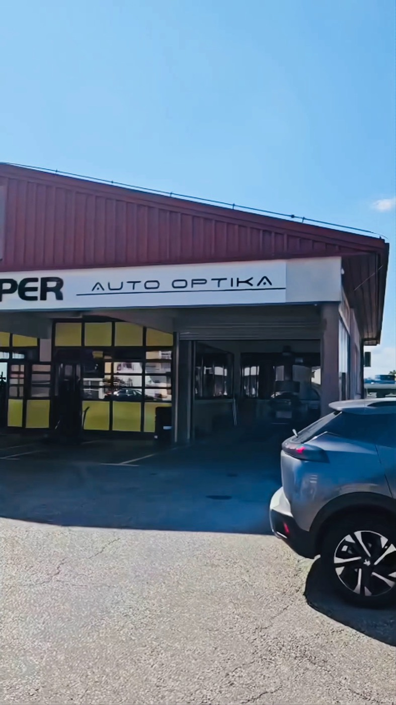
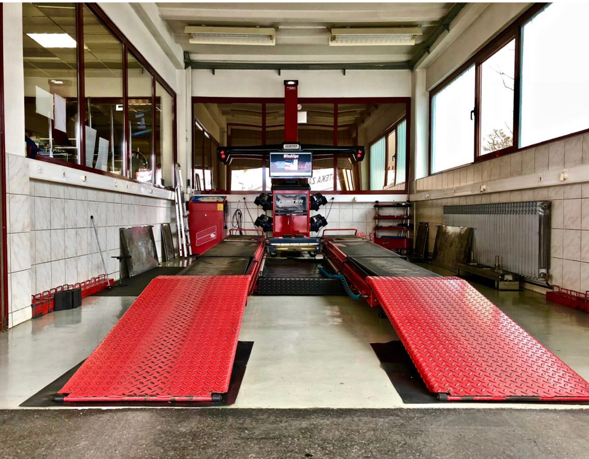

Izmjena guma i kotača
Sezonska zamjena ljetnih i zimskih guma: skidanje i montaža guma na naplatke ili zamjena cijelih kotača.
Termin dogovorite telefonom. S dogovorenim terminom nema čekanja na dan dolaska.
Sve što radimo u radioni na Remetinečkoj cesti 26. Za svaku uslugu najbolje je nazvati i dogovoriti termin.

Ulaz u auto optikuSezonska zamjena ljetnih i zimskih guma: skidanje i montaža guma na naplatke ili zamjena cijelih kotača.
Termin dogovorite telefonom. S dogovorenim terminom nema čekanja na dan dolaska.
Neizbalansiran kotač stvara vibracije koje se osjete u volanu i ubrzavaju trošenje gume i ovjesa.
Kotače balansiramo na balanseru Hunter Road Force Elite.
Probušena guma zbog čavla ili vijka često se može popraviti (krpanje), ako oštećenje nije na boku gume i guma nije predugo vožena prazna.
Dovezite auto ili nazovite pa ćemo reći što je moguće.
Sezonske gume mogu ostati kod nas do iduće izmjene, pa ih ne morate nositi kući ni spremati u podrum.
Uvjete i cijenu čuvanja provjerite telefonom.
Nove gume možete kupiti u radioni i odmah ih montirati.
Recite nam dimenziju (piše na boku gume, npr. 205/55 R16) i provjerit ćemo što je dostupno.
Auto optika (špur) je mjerenje i podešavanje kutova kotača prema podacima proizvođača vozila. Mjerimo na uređaju Hunter.

Mjesto za auto optiku